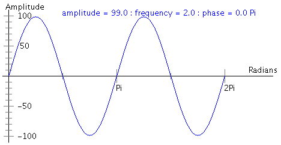

This week you'll be making sounds and music with Python. In this prelab, you will think about some of the underlying details of the lab itself. Please type up your solutions and hand in a printed copy before the beginning of class on Wednesday. Remember, no late prelabs allowed!
Notes are musical sounds called "pitches", that is, how high or low the note is. For example, do, re, mi are all pitches (also known as C, D, and E). Notes can be defined relative to each other; you can raise or lower the pitch by whole steps by going from one note to the next, or the pitch can be raised and lowered in half steps using sharps (#) and flats (b), respectively. These half-steps are called semitones, and there are 12 semitones in an octave (for example, the half step from C to C# is a semitone; from C# to D is as well). Each note also has a duration (how long it sounds) and a volume (how loud it sounds), so technically, a "note" is defined not only by its pitch, but also by its duration and volume.
A music note is just a sound wave. More specifically, any one note can be thought of as a sine wave, and is characterized by its [regular] frequency of oscillation (pitch), its amplitude (volume), and its length (duration). Each of these is explained below.
| y(t) = 99 * sin(t) for 0<=t<=2Pi | |
|  | y(t) = 99 * sin(2t) for 0<=t<=2Pi |
| y(t) = 50 * sin(2t) for 0<=t<=2Pi |
| A | A# | B | C | C# | D | D# | E | F | F# | G | G# | A |
|---|---|---|---|---|---|---|---|---|---|---|---|---|
| 440.00 | 466.16 | 880.00 |
To construct a sound wave, you first need to know the frequency (H), the amplitude (A), and the length (T) of your wave. Once you have this information, you just need to calculate y(t) = A * sin( 2 Pi H t ) for all 0 <= t <= T. Note that t is the timestep of the note you are calculating.
Notice that y(t) is a continuous function (you can draw it without lifting your pen), and computers don't do so great with continuous stuff. Instead, the computer samples the sound wave many times per second to produce digital audio. Each sample represents the amplitude (y-value) of the sound wave at a particular instant in time (t). The sampling rate is the number of samples taken per second. Audio from CDs typically uses a sampling rate of 44100. So, instead of drawing the sound wave without lifting your pen, the computer is drawing a whole lot of dots along the same wave, with the idea that if you draw enough dots, it still looks (and sounds) like a continuous wave even though it isn't. The same idea is used in animation and those little flip books; a sequence of still frames when played at a high enough speed give the impression of smooth/continuous movement. So now if you are calculating 2 seconds of audio with a sampling rate of 44100, the values for t will be 0,1,2,3,...,88198,88199,88200.
In the lab proper, you will be writing your own Soundwave class that will represent the discretization of a snippet of sound. Initially a particular Soundwave will hold a single digitized note, but eventually we'll want to be able to combine and overlay notes as well.
Once you've gotten a basic Soundwave class defined, much of the remainder of the lab revolves around producing music. In particular, we're going to use .wav files (a type of sound file type, much like an .mp3) to produce a variety of scales and generate a Minuet and Trio. Yes, you will write a Minuet and Trio. Sorta. But before that...
A scale is a sequence of notes, defined by the intervals between them. For example, the major scale is defined by the 7 intervals (and hence 8 notes) (2,2,1,2,2,2,1), that is, there are 2 semitones between the first and second notes, between the second and third notes, but a single semitone between the third and fourth notes, and so on. The C major scale is the major scale starting at C and is thus the sequence of notes of values starting at around 523 and ending around 1046, that is, the notes (C, D, E, F, G, A, B, C). The D major scale is the major scale starting at D: the sequence of notes (D, E, F#, G, A, B, C#, D).
There are many other interesting scales, such as the minor scale, defined by the intervals (2,1,2,2,1,2,2), and the blues scale, defined by the intervals (3,2,1,1,3,2) (the scale only contains 7 notes).
Finally, let's talk about this Minuet and Trio business. What is a Minuet and Trio? It is musical piece that is often the third movement of the Classical sonata cycle. Both the Minuet and Trio follow a specific rhythm and form, and they are usually combined by first playing the Minuet, then playing the Trio, then the Minuet once more. You can listen to a very nice Minuet and Trio here.
You'll be generating a Minuet and Trio based on a random algorithm developed by Mr. Mozart himself. Your Minuet will contain 16 measures (musical snippets), as will your Trio. For each of the 16 measures in the Minuet, you will randomly generate a number between 0 and 10 (inclusive); you will use this number to pick a specific music snippet from the following table (there are 176 total snippets). That is, for each column in the table below, you will randomly pick a row, and use whichever measure is that (column, row) entry. For example, if I generate the 16 random numbers (1, 2, 3, 4, 5, 6, 7, 8, 9, 10, 0, 1, 2, 3, 4, 5) for the Minuet, then I will select the snippets (32, 95, 113, 45, 154, 133, 169, 123, 102, 20, 26, 56, 73, 160, 1, 151) from the Minuet table. Here is such a randomly generated Minuet and Trio. For the Trio, you do the same thing except your random number is between 0 and 5, inclusive.
| Minuet Measures | ||||||||||||||||
|---|---|---|---|---|---|---|---|---|---|---|---|---|---|---|---|---|
| 0 | 1 | 2 | 3 | 4 | 5 | 6 | 7 | 8 | 9 | 10 | 11 | 12 | 13 | 14 | 15 | |
| 0 | 96 | 22 | 141 | 41 | 105 | 122 | 11 | 30 | 70 | 121 | 26 | 9 | 112 | 49 | 109 | 14 |
| 1 | 32 | 6 | 128 | 63 | 146 | 46 | 134 | 81 | 117 | 39 | 126 | 56 | 174 | 18 | 116 | 83 |
| 2 | 69 | 95 | 158 | 13 | 153 | 55 | 110 | 24 | 66 | 139 | 15 | 132 | 73 | 58 | 145 | 79 |
| 3 | 40 | 17 | 113 | 85 | 161 | 2 | 159 | 100 | 90 | 176 | 7 | 34 | 67 | 160 | 52 | 170 |
| 4 | 148 | 74 | 163 | 45 | 80 | 97 | 36 | 107 | 25 | 143 | 64 | 125 | 76 | 136 | 1 | 93 |
| 5 | 104 | 157 | 27 | 167 | 154 | 68 | 118 | 91 | 138 | 71 | 150 | 29 | 101 | 162 | 23 | 151 |
| 6 | 152 | 60 | 171 | 53 | 99 | 133 | 21 | 127 | 16 | 155 | 57 | 175 | 43 | 168 | 89 | 172 |
| 7 | 119 | 84 | 114 | 50 | 140 | 86 | 169 | 94 | 120 | 88 | 48 | 166 | 51 | 115 | 72 | 111 |
| 8 | 98 | 142 | 42 | 156 | 75 | 129 | 62 | 123 | 65 | 77 | 19 | 82 | 137 | 38 | 149 | 8 |
| 9 | 3 | 87 | 165 | 61 | 135 | 47 | 147 | 33 | 102 | 4 | 31 | 164 | 144 | 59 | 173 | 78 |
| 10 | 54 | 130 | 10 | 103 | 28 | 37 | 106 | 5 | 35 | 20 | 108 | 92 | 12 | 124 | 44 | 131 |
| Trio Measures | ||||||||||||||||
|---|---|---|---|---|---|---|---|---|---|---|---|---|---|---|---|---|
| 16 | 17 | 18 | 19 | 20 | 21 | 22 | 23 | 24 | 25 | 26 | 27 | 28 | 29 | 30 | 31 | |
| 0 | 72 | 6 | 59 | 25 | 81 | 41 | 89 | 13 | 36 | 5 | 46 | 79 | 30 | 95 | 19 | 66 |
| 1 | 56 | 82 | 42 | 74 | 14 | 7 | 26 | 71 | 76 | 20 | 64 | 84 | 8 | 35 | 47 | 88 |
| 2 | 75 | 39 | 54 | 1 | 65 | 43 | 15 | 80 | 9 | 34 | 93 | 48 | 69 | 58 | 90 | 21 |
| 3 | 40 | 73 | 16 | 68 | 29 | 55 | 2 | 61 | 22 | 67 | 49 | 77 | 57 | 87 | 33 | 10 |
| 4 | 83 | 3 | 28 | 53 | 37 | 17 | 44 | 70 | 63 | 85 | 32 | 96 | 12 | 23 | 50 | 91 |
| 5 | 18 | 45 | 62 | 38 | 4 | 27 | 52 | 94 | 11 | 92 | 24 | 86 | 51 | 60 | 78 | 31 |
If you followed the Honor Code in this assignment, write the following sentence attesting to the fact at the top of your homework.
I affirm that I have adhered to the Honor Code in this assignment.